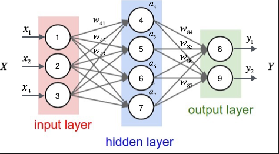

声明: 本文由DataScience原创发表, 转载请注明本文链接mlln.cn, 并在文后留言
转载.
本文代码运行环境:
- windows10
- python3.6
- jupyter notebook
- tensorflow 1.x
计算图概念
在执行计算，例如训练一个神经网络或计算两个整数的总和，TensorFlow在内部使用数据流图（或计算图）来表示整个计算流程。这是一个由以成分下组成的有向图：
- 一组节点，每一个节点代表一个操作
- 一组定向边，每一个边代表执行操作的数据流转路径
TensorFlow有两种类型的边缘：
正常：它们只是节点之间的数据结构的载体。一个操作的输出（来自一个节点）成为另一个操作的输入。连接两个节点的边传输与这些值。
特殊：这个边缘不传递值。它表示两个节点A和B之间的控制依赖性。这意味着节点B只有在A中的操作将在数据操作之间的关系之前结束时才会被执行。
为什么使用计算图
TensorFlow中的一个关键思想是延迟执行，在计算图的构建阶段，您可以编写非常复杂的表达式（我们说它是高度复杂的），但是这些代码只是定义了计算过程, 但是并没有真正的计算。当您想计算他们时，TensorFlow会以最有效的方式进行计算（例如，使用GPU并行执行代码的独立部分）。这样，如果必须处理包含大量节点和图层的复杂模型，图形有助于分配计算负载。同时, 计算过程可以方便的可视化, 并且便于我们理解.
代码实现简单的计算图
如上图所示, 我们可以使用tensorflow实现一个这样的计算图。新手使用tensorflow时, 一定要分清楚两个阶段: 图定义阶段和计算阶段。在图定义阶段, 只是定义了计算图, 但并不进行计算; 在计算阶段才会进行计算。
定义计算图
1 | import tensorflow as tf |
计算
计算阶段只有两行代码, 我们需要创建一个会话, 并执行计算图。因为这是在Jupyter notebook环境中, 我们使用tf.InteractiveSession更方便。
eval方法就是用来执行计算并返回计算结果的。注意因为我们的计算图中定义了两个占位符(placeholder), 顾名思义, 他们并没有值, 需要我们在计算的时候传入值, 所以我们使用feed_dict参数来传入值。
1 | sess = tf.InteractiveSession() |
神经网络可以看作是计算图
我们先来看下之前文章中用到的一个神经网络图:

我们可以用计算图的形式来表示它, 就是这样:
这里L3表示输出层，L2表示隐藏层，L1表示输入层。类似地，θ2表示层2与层3之间的权重矢量; θ1表示层1和层2之间的权向量.σ表示在这些节点内发生的激活函数（这些节点的输出将使用L表示来表示，即L1，L2 ，和L3）。在这种表示中，每个节点不代表单个神经元，而代表一个操作，而箭头不是连接，而是代表沿网络的信息流。这个计算图向我们显示了每一步的操作，以及这些操作运行的输入和输出。L2层在两个输入上运行：输出L1层（向量）和权重θ1，而L3在L2和θ2上运行，并且是我们的最终输出。
代码实现神经网络的计算图
你会看到, 由于计算图的引用, 我们更容易用代码实现这个神经网络结构。
定义计算图
你可能还不清楚tf.Variable和tf.placeholder的用法, 前者用于代表可变量, 一般就是函数的参数, 后者用于代表数据, 比如训练数据。后面我们会详细解释这些函数的用法。
1 | import numpy as np |
执行计算
- 首先因为我们定义了一些Variable, 所以需要先初始化他们, 调用
init.run() - 然后因为定义了一个placeholder, 所以需要在eval的时候, 传入feed_dict参数
1 | init = tf.global_variables_initializer() |
总结
这篇教程主要目的是让大家对tensorflow的计算图有一个感性认识, 并理解定义计算图和执行计算图这两个过程。同时, 通多第二个例子, 我们可以看出用计算图来表示神经网络的计算过程也是很方便的。
注意
本文由jupyter notebook转换而来, 您可以在这里下载notebook
有问题可以直接在下方留言
或者给我发邮件675495787[at]qq.com
请记住我的网址: mlln.cn 或者 jupyter.cn